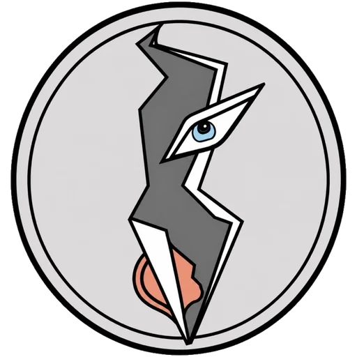
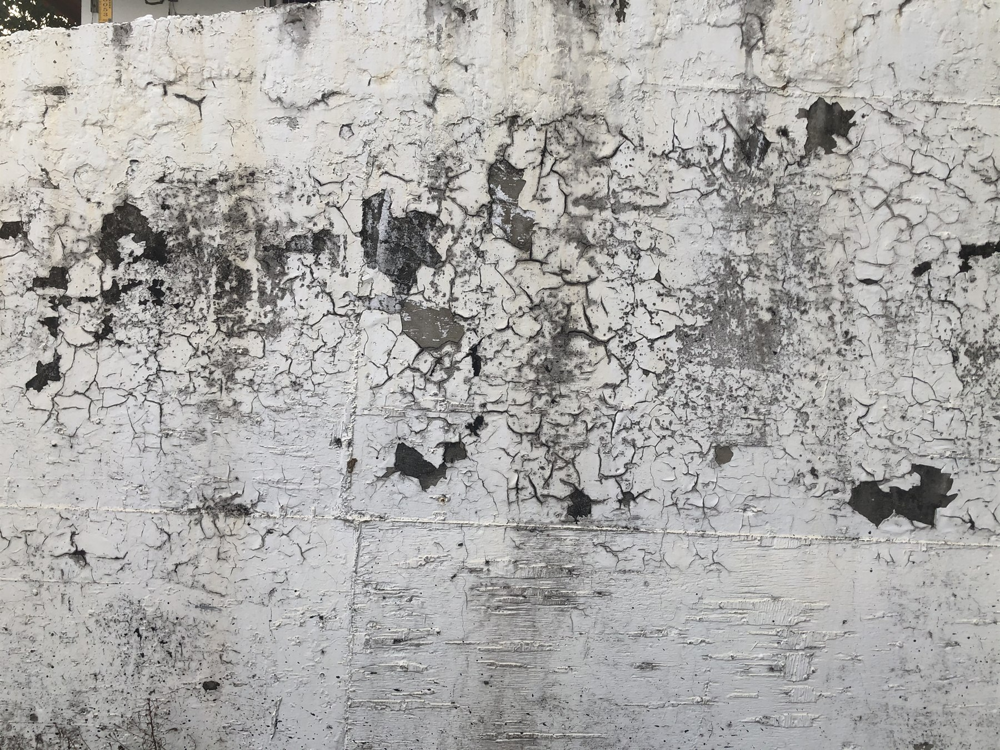
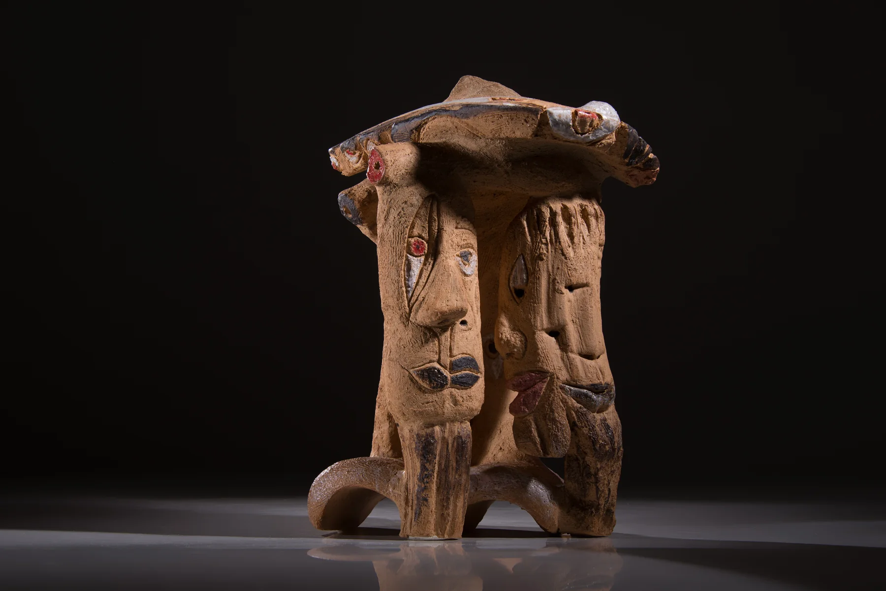
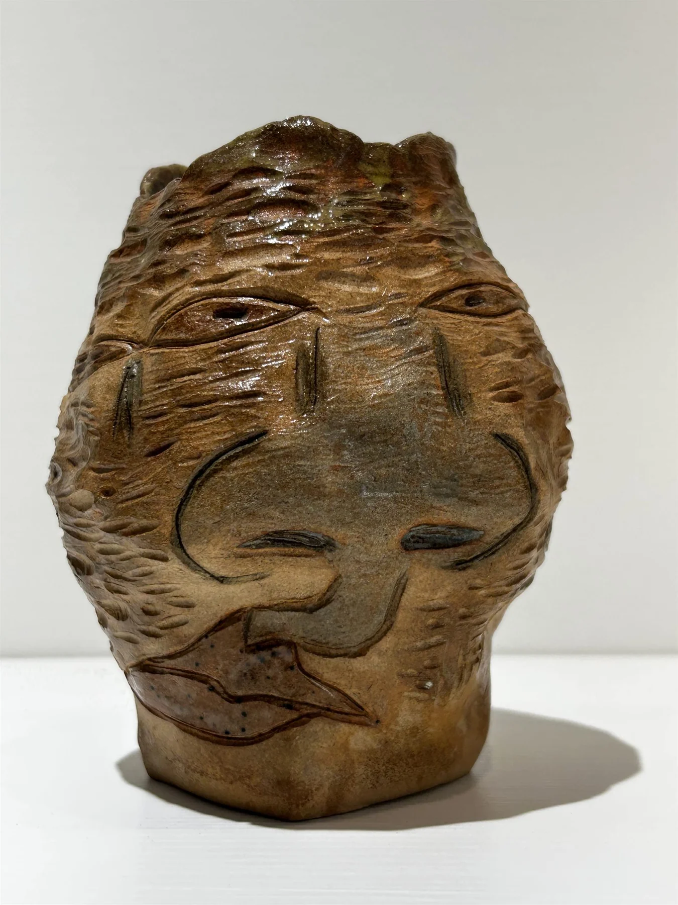
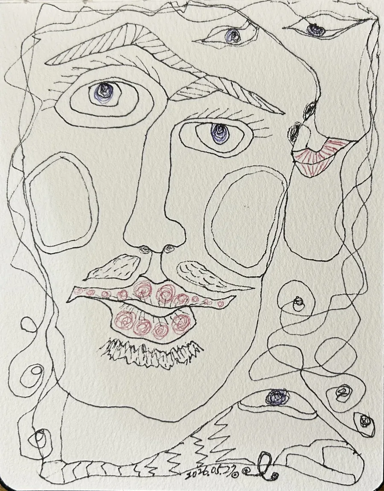

The World Has Always Been Alive
Yuzen Universe
Lives yet to take form gradually emerge between seeing, imagination, and the hands.
Between seeing and imagining, a universe begins to emerge.
01 / What Is Yuzen Universe
Life slowly appears through traces, cracks, clay, line, memory, and imagination.
Yuzen Universe is an artistic world where life gradually emerges through traces, cracks, clay, line, memory, and imagination.
It begins with the sense that the world is not silent or empty. Stone patterns, wood grain, old walls, coastlines, fragments, and everyday marks all hold possibilities for life that have not yet been seen.
Through seeing, imagination, and the movement of the hands, these possibilities slowly take form as faces, eyes, vessels, spirits, bodies, lines, and beings.
02 / About Yuzen Cheng
From the world's traces into Yuzen Universe
Yuzen Cheng is a Taiwanese artist working across ceramics, drawing, wood sculpture, painting, and mixed media.
She founded ZEAL Interior Design Co., Ltd. in 1993 and remains its Founder and Design Director. More than thirty years of interior design have given her a deep sensitivity to space, material, structure, and atmosphere, which she carries into her artistic practice. She also founded two galleries: Yaqun Art & Design Space in 1995 and Q Art Space in 2009.
She took up wood carving in 2018 and began working in clay in 2019, after which clay became her principal language. She completed her MA in the Department of Arts and Design at National Tsing Hua University in 2023, and that same year taught visual arts at Hsin Chu County Tzu Chiang Junior High School.
Her work does not simply reproduce what stands before her. It grows from a shifting relationship between the world and perception, allowing still-unformed traces of life to gradually become visible.
In recent years, Yuzen Universe has become her central creative world, exploring cracks, fragments, stone textures, and generated personhood as ways for animism and hidden life to appear.
- Education
- MA, Department of Arts and Design (Design Division), National Tsing Hua University, Taiwan, 2023. MA thesis: Between Seeing and Imaginary
- Practice
- Ceramics, drawing, wood carving, painting, mixed media
- Professional
- Founder and Design Director, ZEAL Interior Design Co., Ltd., 1993–present. Founder of Yaqun Art & Design Space (1995) and Q Art Space (2009)
- Teaching
- Visual arts, Hsin Chu County Tzu Chiang Junior High School, 2023
- Based in
- Taiwan
03 / Four Views of Becoming
A philosophical compass for Yuzen Universe
Yuzen Universe is not a theory, but a way of seeing, making, and allowing life to gradually emerge.
The World Has Always Been Alive | Worldview
The world does not hide complete lives waiting to be found. It continually offers possibilities for life to emerge.
Creation Is Life | Philosophy of Life
Creation is not about proving that I exist. In creating, I am fully alive.
Form Emerges Through the Hands | The Maker and Becoming
The hands move before naming. Form gradually appears through touch, material, movement, and imagination.
As Seeing Turns, Forms Arise | The Viewer and Seeing
A work does not stop when it is finished. As the viewer shifts perspective, new forms of life emerge.
04 / Creative Concept
Between Seeing and Imagining
The creative concept behind Yuzen Universe.
My way of working is what I call Between Seeing and Imagining.
Seeing is what the eye takes in. A mottled wall, the branches of an old tree, a photograph of a landscape—things anyone passes in a day—set off an association in me, and I find in them the faces of all kinds of sprite-like beings. Sometimes they gather in groups and talk; sometimes they pile up together, playing. They wear smiles, full of joy. When I watch them dancing, I seem to see my inner self step in and dance with them.
Imagining is what the mind’s eye sees, where imagination has no limit. Dreams and inventions run before me like images in a projector, frame after frame, and they are the wellspring of my work. Even a figure made purely of imagination, never seen in the world, can first be drawn in line and then shaped in clay—a crowd of time travellers in every imaginable form, each another endless version of the self.
Between seeing and imagining is what ferments once the two fuse. An image or a situation moves me; I extend it with imagination, then rearrange, recombine, and remake it—this is my visual association. And because thought keeps changing like water, never settling, the same beginning branches out, and the works that come of it are varied and never twice the same.
When I work, I empty my thinking, rely on intuition, and catch the inspiration of an instant. In my earlier work I often took the face-like patterns I found around me, drew them as illustrations, then shaped them in clay—turning illustration into three dimensions. Clay is my main language, because its plasticity can give a living form its appearance quickly. After painting and a high-temperature firing, the kiln often holds a surprise.
As the work went on, I gradually stopped deciding the form in advance: the hands go first, the form arrives after. I deliberately give a piece no single front, so that a viewer has to walk around it and meet a different life at every angle.
I believe the world has always been alive. By “alive” I mean that the world holds, always, possibilities for life that have not yet been seen. Those textures, traces, and forms come into life gradually through seeing, imagination, and the work of the hands. I do not record it, and I do not create it; I too am a participant in that becoming.
05 / Work Series
Five paths through the same creative universe
From traces left by the world, through cracks and time, to clay, persona, and line, life gradually takes form across different ways of seeing and different materials.
Each work page is bilingual — Chinese with English throughout, including titles, materials, dimensions, and notes.
Series 1
Manifestation of Life
Life gradually emerges from stone patterns, wood grain, old walls, coastlines, and traces left by time. Seeing and line allow unformed hints of life to take shape.
EnterSeries 2
Ancient Civilization Reborn Through Cracks
Fragments, cracks, deities, and sediments of time become part of the emergence of new life forms. Civilization is not restored; it is reborn through imagination and clay.
EnterSeries 3
Ceramic Beings
Clay is not merely a vessel. Through the hands, touch, movement, and chance, clay takes on a presence that seems capable of gazing, breathing, holding memory, and responding.
EnterSeries 4
Archaeology of Persona
Persona is not a single true self waiting to be uncovered. One form can hold many faces, many roles, many lives, and multiple ways of seeing.
EnterSeries 5
Line Generation
Line does not depict a life already complete. It begins movement. As lines flow, turn, branch, and meet, form appears before naming, and multiple lives emerge within the same line.
Enter06 / Selected Works
Entrances into Yuzen Universe
Each selected work is an entrance into Yuzen Universe. Some begin from stone, some from clay, some from line, and some from the layered presence of persona. Together, they reveal how life slowly appears through seeing, material, and transformation.
 Ancient LegendStone texture, seeing, and line allow eyes and faces to emerge like ancient signs.
Ancient LegendStone texture, seeing, and line allow eyes and faces to emerge like ancient signs.

Memory of the Old WallTraces on an old wall become a field where memory, line, and life slowly gather.
Pillar of MemoryA cracked ceramic body where fragments, deity, and time form a new living presence. Inner FormClosed eyes, gaze, and an open mouth meet as clay becomes a life vessel.
Inner FormClosed eyes, gaze, and an open mouth meet as clay becomes a life vessel.
 Not a VaseA vessel that refuses function and lets gaze, opening, and plant matter become a living presence.
Not a VaseA vessel that refuses function and lets gaze, opening, and plant matter become a living presence.

Flower VesselFlower, body, opening, and gaze meet in a ceramic form of breath and memory. Silent ResonatorA quiet form where openings and curved surfaces seem to hold a voice before speech.
Silent ResonatorA quiet form where openings and curved surfaces seem to hold a voice before speech.
 Double SmileTwo faces and two directions of seeing gather in a single ceramic persona.
Double SmileTwo faces and two directions of seeing gather in a single ceramic persona.
 Between Virtual and RealAn early ceramic work where face, opening, and inner space begin to cross.
Between Virtual and RealAn early ceramic work where face, opening, and inner space begin to cross.
 Wordless and SpeechlessTwo ceramic figures where silence becomes posture, presence, and inward voice.
Wordless and SpeechlessTwo ceramic figures where silence becomes posture, presence, and inward voice.

Inner ArtistContinuous movement allows inner life to appear before naming. Tree Spirit's PrideAn early clay spirit that marks the beginning of Yuzen Universe's language of life.
Tree Spirit's PrideAn early clay spirit that marks the beginning of Yuzen Universe's language of life.
I once wanted my work to prove that I had been here.
Only later did I understand that existence needs no proof.
I create. I am.
Creation Is Life.
07 / Exhibitions & Awards
Where the work has been seen
- 2026
- Solo Exhibition of Ceramics, Eyes That See Spirits · All Things Transform — Kalos Art, Zhunan, Miaoli, Taiwan (23 Jan – 28 Feb) Exhibition Page
- 2023
- Solo Exhibition, Between Seeing and Imagining — Chenghuang Exhibition Space, Idea Deja, Hsinchu, Taiwan
- 2022
- Two-Person Exhibition, HAPTISCH + OPTISCH — ZE Gallery, National Tsing Hua University, Hsinchu, Taiwan
- 2021
- Three-Person Exhibition of Ceramics and Wood, Parts — ZE Gallery, National Tsing Hua University, Hsinchu, Taiwan
- 2021
- Selected Entry, Design Category (Art and Design), Spring Tsinghua Art Excellence Award, National Tsing Hua University
- 2020
- Solo Exhibition, The Eternal Moment — ZE Gallery, National Tsing Hua University, Hsinchu, Taiwan
08 / Contact
Exhibition, Collection, and Collaboration Inquiries
For exhibition proposals, collection inquiries, curatorial conversations, or collaborations, please contact Yuzen Universe.